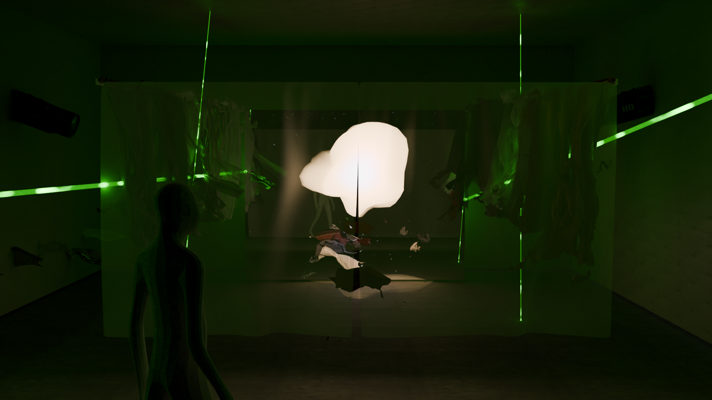
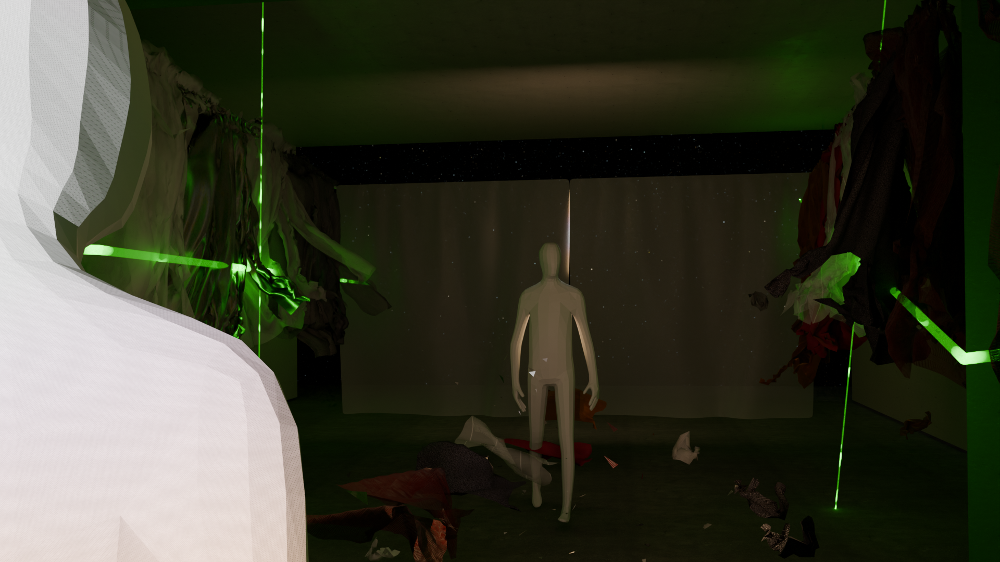
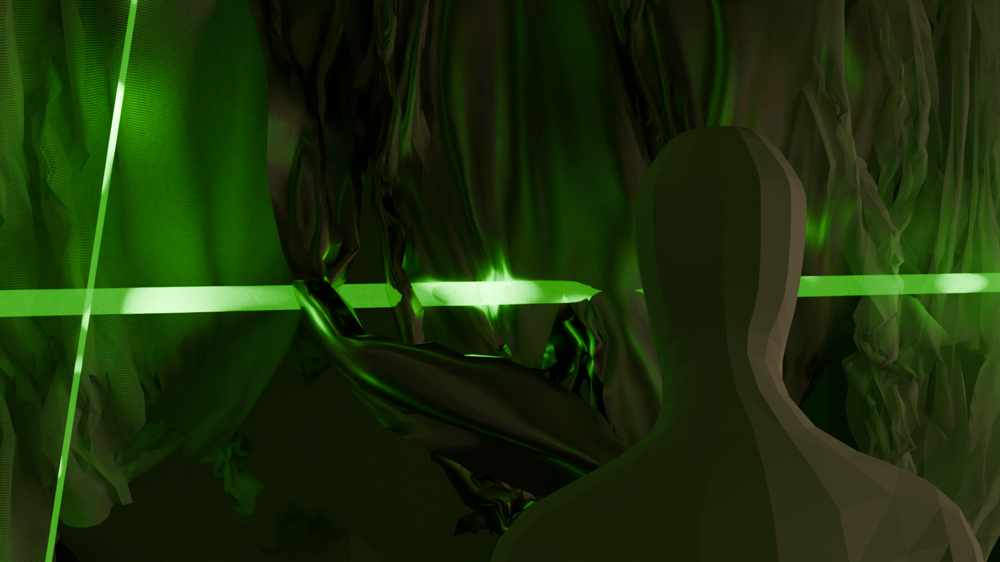
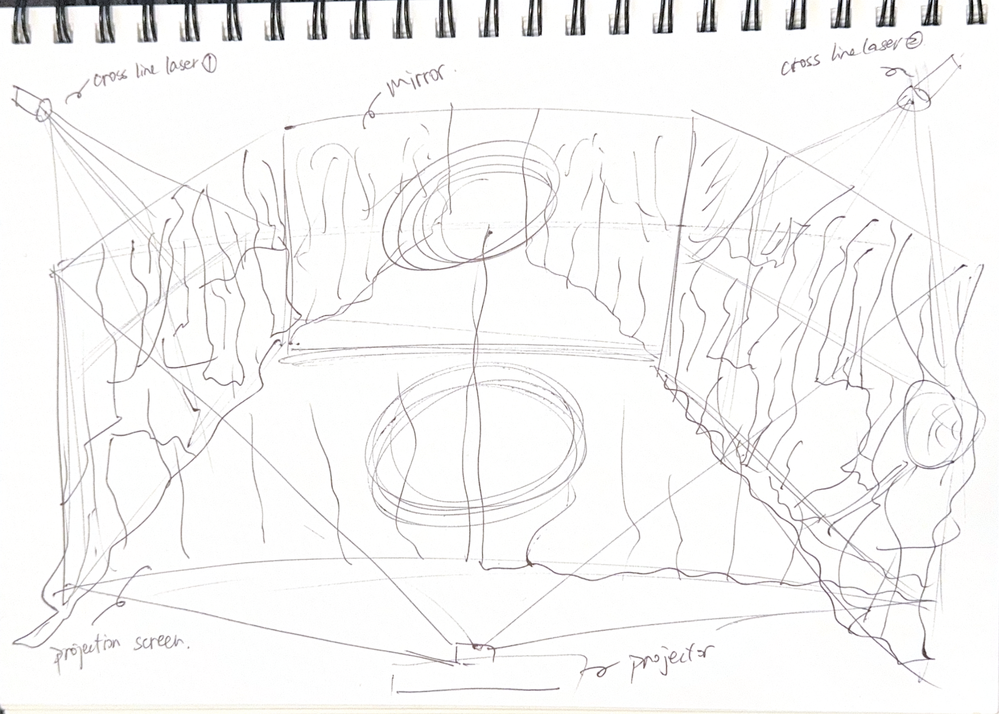
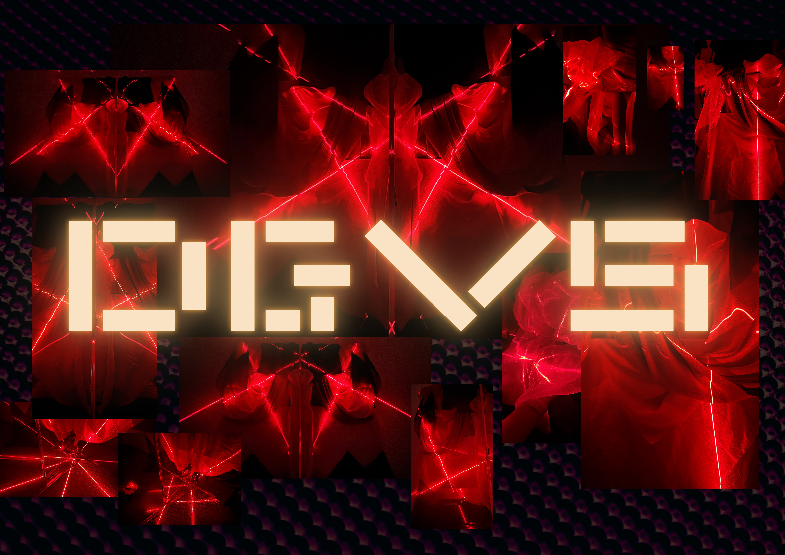
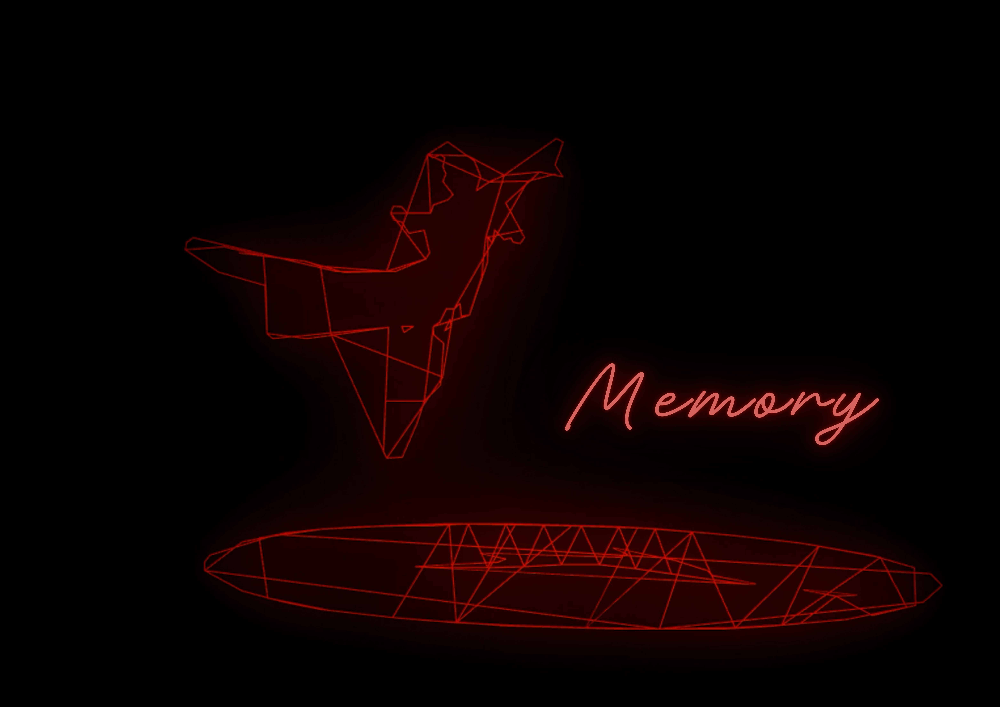

Speculative Design · Interactive Installation · Social Impact
Neorality: Reclaiming Reality
When the world goes digital, who stops being seen?
The Question
Digital exclusion is usually shown as a statistic. What if you could feel it?
In China, hundreds of millions of older adults live behind a grey digital divide — health codes, payments, and public services that assume everyone is online (Song et al., 2021; Cui et al., 2024). The usual telling is a number. Neorality asks the harder question: what does it feel like to be made invisible by a system that takes your presence for granted — and what would it take to draw yourself back into being seen, heard, and present?
Research & method
The work grew out of a research report on China's grey digital divide, which traced the divide past a simple “access gap” to something deeper: the devaluing of non-digital cultural capital — the oral histories, lived memory, and ways of knowing that don't translate into an app. I reframed the problem from access to a crisis of being seen, valued, and present, and grounded it in the right to choose what reality you live in (SDG 10).
From there I used speculative design to push it into 2050: a future where reality itself is contested, and a coined idea — Neorality — insists that the orality and presence of the excluded still count as real. The method was as material as it was conceptual: a fog “fourth wall” to be broken, cross-line lasers, projection, and an audio-reactive system in TouchDesigner so that vocal qualities drive the light — turning interaction into a form of discursive authorship rather than decoration.
The Experience






How it builds



What it revealed
What surfaced through making was something the research alone couldn't name: the grey digital divide was never really about access or skill, but about authorship — about who holds the right to decide what counts as real. Inside the tracked space, the laser planes bend toward a person's own voice and movement, so a visitor feels, briefly and bodily, the inverse of what rural elders live — a world that refuses to hold still without them, a system forced to realign itself around their presence. The fabric remnants left dangling, bits of land-based culture that resist erasure, became the most legible part of the work: memory the digital couldn't fully metabolise.
“Conceptually rich and intellectually ambitious… design explorations that successfully translate abstract sociopolitical tensions into visceral material realities.”
- · Cui, Y. He, Y. Xu, X, Zhou, L., Jonathan Aseye Nutakor. & Zhao, L. (2024). Cultural capital, the digital divide, and the health of older adults: Amoderated mediation effect test. BMC Public Health, 24(1). https://doi.org/10.1186/s12889-024-17831-4;
- · Song, Y., Qian, C., & Pickard, S. (2021). Age-Related digital divide during the covid-19 pandemic in China. International Journal of Environmental Research and Public Health, 18(21), 11285. https://doi.org/10.3390/ijerph182111285.
Special thanks
- Dr. Patricia Flanagan & Jonathan Shaw, Faculty of Art, Design and Architecture, UNSW Sydney